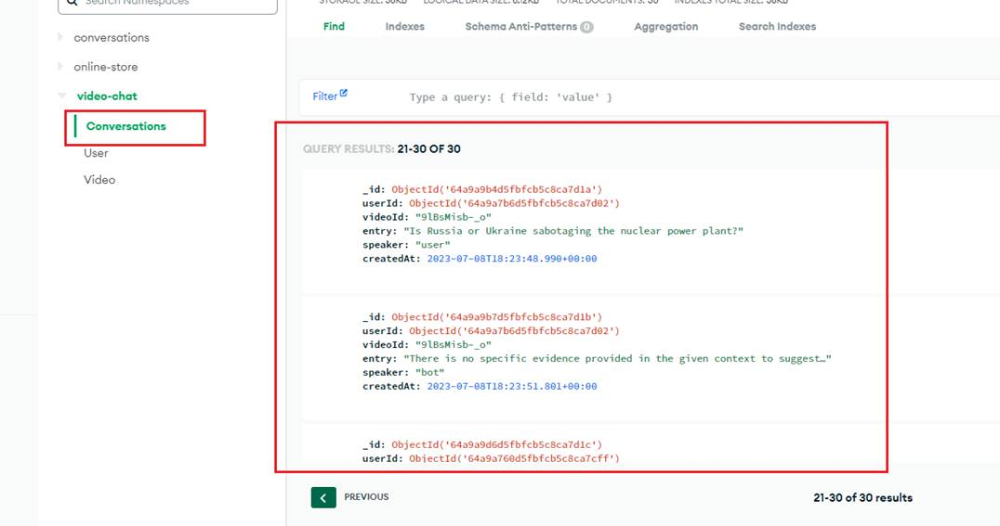

AI YouTube Video Chat
Video Link: https://youtu.be/dv6CAxMD_ts
GitHub Repository: https://github.com/Ashot72/AI-YouTube-Video-Chat
In this AI YouTube Video Chat Next.js application, we ask questions to a YouTube video bot and get answers. This application makes use of LangChain https://js.langchain.com/
which is a framework for developing applications powered by language models. As a cloud-based database, MongoDB https://www.mongodb.com/atlas/database
is used with Prisma ORM https://www.prisma.io/. We utilize HNSWLIB https://js.langchain.com/docs/modules/indexes/vector_stores/integrations/hnswlib, an in-memory vector
store that can be saved to a file. To learn more about vector DB, you can refer to my LangChain Document Helper https://github.com/Ashot72/LangChain-Documentation-Helper application.
Figure 1
Note that we are using the latest Next.js 13 https://nextjs.org/docs with the app directory, which makes it easy lay out complex interfaces that maintain state
across navigations, avoid expensive re-renders, and enable advanced routing patterns.
Figure 2
We use NextAuth https://next-auth.js.org/ for the authentication with Google Provider. In this
https://www.makeuseof.com/integrate-google-authentication-in-nextjs-using-nextauth/ article you can read how to integrate Google Authentication in Next.js
apps using NextAuth.
Figure 3
When we add a video, the first thing we do is get the video transcription.
Figure 4
We use YoutubeTranscript package to extract a transcript from a YouTube video.
Figure 5
In the second step, we create an HNSWLIB index for each video and save it on the hard drive.
Figure 6
You cannot add a video URLs that already exist. Each index belongs to one YouTube video.
Figure 7
Next, we summarize the video transcript.
Figure 8
Finally, we save the video information to the MongoDB database.
Figure 9
When we start a YouTube video chat, we load the database from the hard drive only once, which occurs when the first prompt is sent to the bot.
Figure 10
Here, you can see that we load the indexed DB store from the hard drive, generate the chain and save the chain information along with the
videoId of the YouTube URL.
Each time we check, if we find the index in the chains array, we load the corresponding file from the hard drive. Therefore, we only load
the indexed file from the hard drive once, create the chatGPT model, and initialize the chain only once as well.
Figure 11
We also generate a conversation log and pass the last ten conversation to the chain as chat history, which serves as the context for each prompt.

Figure 12
Here is the conversation log in MongoDB.